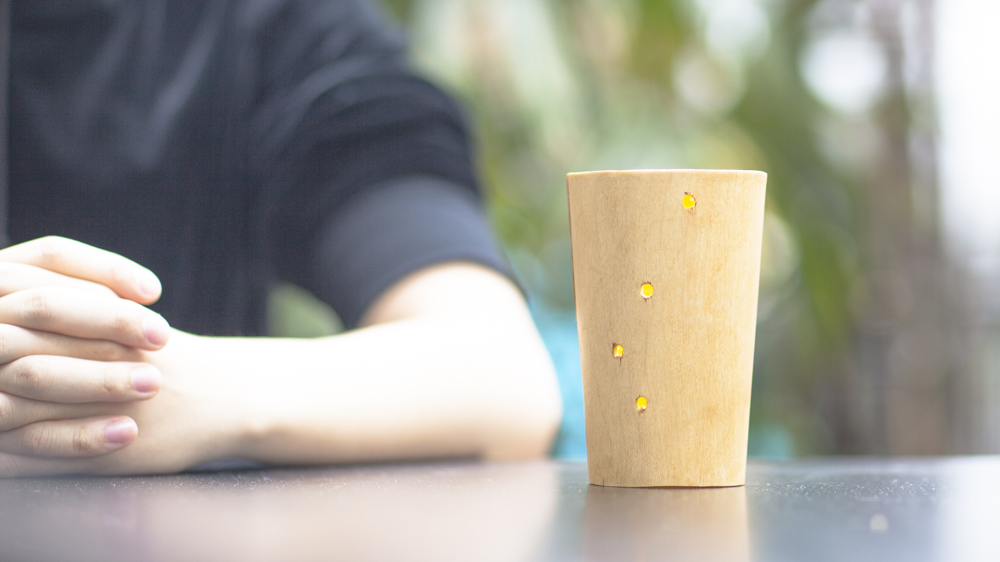

SOME PRODUCT I MADE





[ Abstract ]
Anxiety is much more than just feeling ‘worried,’ “It can involve feelings of uneasiness, worry, apprehension, and fear. It can create havoc in your home, destroy relationships, cause employees to miss work, and prevent people from living full, productive lives. My thesis concept was born out of the anxiety I felt while waiting for a response in emails, text messages and notifications. My working stands as follows: How might we were people’s anxiousness even they have nothing to do? How might we modulate different levers based on their situation to cope with their anxious emotions? Are there any strategies to bring their attention back when they feel anxious or unfocused disposition? How might we use flow theory to apply in this domain, by decrease the challenge or by creating a relaxing experience?
I Posted several thesis studies on this publication, if you are interested in this topic, stay tuned!
This is a long journey. I am a person is easily made anxious. Starting with the exploration of waiting text messages, I started doing a lot of research on waiting and time, and then explored the relationship between people, efficiency, and their time perception. After repeated user research and testing, I realized that what I really care about is not the time people spend waiting, but their emotions while they were waiting. This can be uncertainty, it can be anxiety, it can be a worry about relationships…
When I first started working on this project, I was anxious every day because I did not know what to do. I was anxious about deadlines and pending activities, I was anxious about critiques and questions during the project, and I was anxious about the postgraduate project. I was also faced with finding a job. This made me even more anxious. At the same time, I found myself constantly stressed while waiting for someone to respond to my texts or messages. As I went through the process, I often felt that my project was solving my own problems. I decided to live in the moment by trying different directions and areas.
Living in the moment seems to be a very simple solution. Enjoy this process when you are anxious. Even though I am now graduating, I am lost in the uncertainty of the future. I have learned to live in the moment. I do not know if I will be here again. It took so long to study this topic, but I really enjoyed the process. Although the process was painful, it was worth it, and I learned a tremendous amount.
This topic is still a big problem. Every day people face their anxiety. In the future, I would like to use this same methodology to look at different issues in the environment, but for now I will choose to live in the moment and let myself live faster. Hopefully, this research will provide a starting point for future research on the topic of anxiety and waiting times.